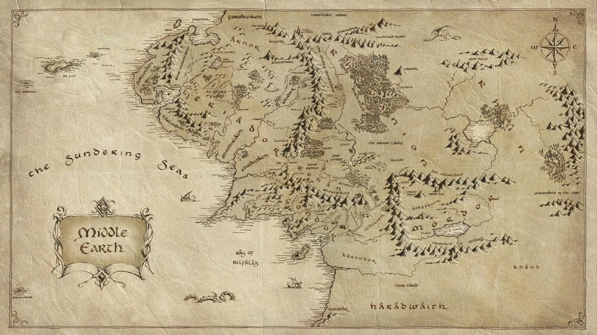

Погрузитесь в увлекательный мир Средиземья
Этот сайт посвящен великому произведению Дж. Р. Р. Толкина "Властелин колец", который открыл мир Средиземья миллионам читателей по всему миру. Здесь вы найдете информацию о персонажах, местах, а также сможете погрузиться в истории, которые сформировали эпическое повествование.
Фродо Бэггинс — хоббит, который несет ответственность за уничтожение Единого кольца. Он начинает своё путешествие в Шире и становится одним из величайших героев Средиземья.
Арагорн — наследник королевства Гондор и один из главных героев трилогии. Его мастерство в бою и лидерские качества играют важную роль в победе над Сауроном.
Гэндальф — мудрый маг, который направляет героев на их пути. Он играет ключевую роль в поддержке Фродо и его друзей в их путешествии.
Леголас — эльф-лучник, верный союзник Фродо и Арагорна. Его навыки стрельбы и выносливость делают его незаменимым членом братства кольца.
Гимли — гном, который становится верным другом Леголаса и союзником в битвах. Несмотря на различие в расах, Гимли и Леголас становятся неразлучными друзьями.
Главная история "Властелина колец" рассказывает о том, как хоббит Фродо Бэггинс с помощью своих друзей отправляется в опасное путешествие, чтобы уничтожить Единое кольцо, которое обладает огромной магической силой и может подчинить себе все живое. Путешествие приводит героев в самые разные уголки Средиземья, где они сталкиваются с множеством опасностей, сражений и личных испытаний.
Средиземье — это мир, богатый мифами, легендами и языками. Толкин создал целую историю мира, его народов, богов и древних существ, таких как Валары, эльфы, орки и драконы. Изучение мифологии Средиземья открывает множество тайн и загадок, которые толкиноведы до сих пор пытаются разгадать.